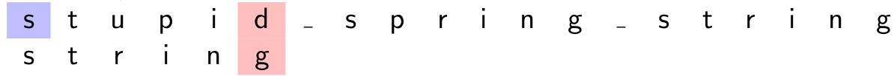
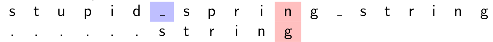
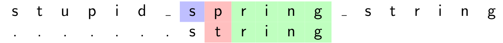

Recherche dans un texte¶
Warning
Ce cours a été automatiquement traduit des transparents de M.Noyer par Lorentzo et Elowan et mis en forme par Mehdi, nous ne nous accordons en aucun cas son travail, ce site à pour seul but d'être plus compréhensible pendant les périodes de révision que des diaporamas.
Sommaire
Rappel de l'algorithme naïf
Algorithme de Boyer-Moore
- Boyer-Moore-Horspool
Algorithme de Rabin-Karp
Crédits
Pour Boyer-Moore :
Pour Rabin-Karp : Informatique -Cours et exercices corrigés- (MP2I-MPI) (ellipse)
Introduction¶
Principe de la recherche¶
- Soit un texte écrit dans l'alphabet \(Σ\)
- Soit un autre texte (plus court) écrit dans le même alphabet : le motif
- On cherche le motif dans le texte et, en cas de présence constatée, on retourne la position de la première lettre de la première occurence du motif dans le texte.
- Nous dirons que le motif est présent à la position \(i\) si la lettre \(i\) du texte est égale à la lettre \(0\) du motif, la lettre \(i+1\) du texte est égale à la lettre \(1\) du motif et ainsi de suite jusqu'à la dernière lettre du motif.
Différence avec la recherche de sous-tableau dans un tableau¶
- Le nombre de caractères dans l'alphabet est en général négligeable devant celle du texte exploré
- Cette propriété amène des optimisations inapplicables dans un contexte de tableau contenant un grand nombre de symboles différents.
Rappel de l'algorithme naïf¶
Conventions¶
- Soit \(s\) le texte et \(m\) le motif, \(|s|\) et \(|m|\) leurs longueurs. Soient \(k\), \(r\) dans \([\![ 0,\left |\textsf s \right | ]\!]\). Les lettres sont numérotées à partir de \(0\).
- On applique les notation de slicing Python :
- \(s[i]\) est la lettre en position \(i\)
- \(s[−1]\) : dernière lettre de \(s\) (comprendre \(s[|s| − 1]\)).
- \(s[−k]\) : \(k-ième\) lettre de \(s\) en partant de la fin (comprendre \(s[|s| − k]\)).
- \(s[k : r]\) est la sous-chaîne de \(s\) qui contient les lettres de la position \(k\) à \(r−1\). C'est la chaîne vide si \(r ≤ k\)
- \(s[: r]\) est le préfixe de longueur \(r\) de \(s\) (lettres \(0\) à \(r − 1\)).
- \(s[: −k]\) est la sous-chaîne qui ne contient pas les \(k\) dernières lettres. Longueur \(|s| − k\).
- \(s[k :]\) est le suffixe de \(s\) qui commence à la position \(k\) (toutes les lettres de \(s[k]\) incluse à la fin). C'est un mot de longueur \(|s| − k\).
Principe¶
- On parcourt toutes les positions de \(s[: −(|m| −1)]\) et on fait glisser le motif de une case à chaque étape (on s'arrête dès que le motif "dépasse" du texte).
- Pour la position \(i\), on regarde si le motif est présent à partir de cette position :
- Pour une position \(k\) dans le motif
- La lettre \(s[i + k]\) dans le texte doit être égale à la lettre \(m[k]\) dans le motif
- Si c'est le cas on passe à la position suivante dans le motif et le texte.
- Sinon, le motif n'est pas présent en position \(i\), on recommence la recherche à la position \(i+1\).
Code¶
Complexité au pire¶
La complexité au pire est obtenue lorsqu'on entre systématiquement dans la seconde boucle et qu'on explore les lettres du motif presque jusqu'au bout.
- \(s = a^n\) (\(n\) lettres) et \(m = a^{p-1}b ~~\)(\(p\) lettres)
- On explore les \(p\) lettres du motif pour chacune des \(n − p + 1\) premières lettres du texte.
- Complexité au pire en \(\Theta((n+1 -p)p)~\) Et \(\Theta(np)\) (si \(p < \frac{n}{2}\) par exemple).
Complexité¶
- Souvent, au bout d'une ou deux comparaisons, on peut invalider la position et passer à la suivante.
- Si le motif est présent à la fin du texte, on a une complexité en \(O(n+p)\) (où \(p\) comparaisons sont nécessaires pour vérifier une à une les lettres du motif).
- \(O(n+p) = O(n)\) si \(p ≤ n\).
Algorithme de Boyer-Moore¶
Boyer-Moore-Horspool¶
Principe de l'algorithme¶
- On parcourt le texte \(s\) du début à la fin mais on effectue parfois un décalage dépendant de la première comparaison négative (ce qui fait gagner du temps).
- Le motif \(m\) est recherché en commençant par la fin : on teste la présence de suffixes du motif de plus en plus gros. \(\color{red}\text{C'est le contraire de la méthode naïve ou le motif}\) \(\color{red}\text{est recherché en faisant grossir ses préfixes.}\)
-
L'algorithme utilise un pré-traitement du motif afin de calculer le saut maximum à effectuer après avoir trouvé une non-concordance.
-
Exploration de la lettre \(i\) de \(s\) : on se demande si ce n'est pas la première lettre de \(m\).
- On se place donc en position \(i + |m| − 1\) de \(s\)(donc à droite de \(i\)). On explore les positions \(i + |m| − 1\), \(i + |m| − 2\) . . . dans le texte en comparant avec les positions \(−1\), \(−2\) etc.. du motif. On espère arriver sans encombre à la lettre \(i\).
- Si on arrive sans erreur à la position \(i\) : on a trouvé le motif.
- Sinon, on a trouvé un suffixe \(xm'\) de \(s[: i+ |m|]\) (\(s\) tronqué à \(i + |m| − 1\)) tel que \(m'\) est un suffixe propre de \(m\) et pas \(xm'\)
- Si \(x\) n'est pas présent dans \(m\), on reprend la recherche juste après \(x\) (pas la peine de perdre son temps à placer le motif avant le \(x\) du texte)
- si \(x\) est présent, on aligne le \(x\) de \(m\) le plus à droite et le \(x\) de \(s\)
Règle du mauvais caractère : exemple¶
On cherche string \((m)\) dans le texte stupid_spring_string \((s)\).
- Démarrage en position \(0\) de \(s\).
 d et g ne correspondent pas en position \(5\) et il n'y a aucun d dans le motif. On passe à la position suivante \(0 + |m|\) de \(s\). -
Poursuite en position \(6\) de \(s\) :
 Le n et le g ne correspondent pas. Mais \(1\) cran à gauche de g, il y a un n dans le motif. On aligne donc le n du motif avec celui du texte. -
Poursuite en position \(6 + 1\) de \(s\) :  Correspondance de \(4\) lettres. Mais p ne figure pas dans le motif. On décale le motif APRÈS ce p, donc de \(2\) positions. etc..
Table des sauts/occurences à droite¶
On veut chercher le motif abaa. Voici sa table des occurrences à droite :
occurrence la plus à droite :
Table des occurences à droite
\(\begin{matrix} \text{Lettre} & \text{occurence la plus à droite} & \text{saut max}\\ & & \\ a& 2 \text{ (on ne tient pas compte du dernier a)} & 3-2\\ b& 1 & 3-1\\ & & \\ \text{Autres lettres}& \varnothing & |m|= 4\\ \end{matrix}\)
On note \(d_m(x)\) l'occurrence la plus à droite de \(x\) dans \(m\). On veut chercher le motif abc. Voici sa table des occurrences à droite :
Table des occurences à droite
\(\begin{matrix} \text{Lettre} & \text{occurence la plus à droite} & \text{saut max}\\ & & \\ a& 0 & 2-0\\ b& 1 & 2-1\\ & & \\ \text{Autres lettres dont c}& \varnothing & |m|= 3\\ \end{matrix}\)
Remarques
Lorsque la dernière lettre du motif \((m[−1])\) n'est pas présente ailleurs dans \(m\) (comme dans abcd mais pas abcb), le saut pour \(m[−1]\) est de \(|m|\).
Il y a autant de lignes que dans l'alphabet. On peut préférer utiliser un dictionnaire, ce qui est économe en espace si le motif contient beaucoup moins de lettres que l'alphabet (songer à l'UTF16 !)
Définition des variables et principe¶
\(s\) : texte, \(m\) : motif, \(d_m\) tableau des occurrences les plus à droite.
- \(i\) est la position courante dans le texte (position à laquelle on espère trouver le premier caractère du motif). \(i ↑\)
- Le motif est placé sous la position \(i\) du texte.
- \(j\) est la position de la lettre courante du motif. \(j ↓\).
On compare \(s[i + j]\) et \(m[j]\) comme dans l'algo naïf. - Si \(s[i + j] = m[j]\), j est décrémenté : c'est positif pour espérer trouver le motif.
- Si \(s [i + j ] ≠ m[j ]\) et \(s [i + j ] = y\) , on amène la lettre \(y\) la plus à droite du motif (si elle existe...) au dessous de la position \(i + j\) du texte. Ce déplacement peut s'effectuer en décalant le motif vers la gauche (aucun intérêt) ou vers la droite (très intéressant).
Comparaison de \(s [i + j]\) avec \(m[j]\)¶
\(s\) : texte, \(m\) : motif, \(d_m\) tableau des occurrences les plus à droite. Le motif a été placé sous la position \(i\) du texte. Les lettres \(j + 1,j + 2,...,|m|−1\) du motif corespondent bien à leurs homologues du texte. Supposons que \(s[i + j] ≠ m[j]\) (sinon \(j\) est décrémenté) :
- Si \(d_m(s[i + j]) = ∅\), la recherche du motif ne sera pas satisfaite tant que ce caractère \(s[i + j]\) sera présent. On reprend la recherche en \(i + j + 1\)
- si \(s[i + j]\) est dans le motif et \(d_m(s[i + j]) ≥ j\), cela signifie que \(s[i + j]\) est présent plus à droite que \(j\) dans le motif. Aligner cette occurrence ne permettrait pas d'avancer la recherche (cf figure 1). On reprend en \(i + 1\).
- Si \(d_m(s[i + j]) < j\), le caractère \(s[i + j]\) est présent dans le motif à gauche de la position courante j. On "aligne" ce caractère du motif avec celui du texte. \(\color{red}\text{On reprend donc la recherche dans le texte en}\) \(\color{red}i'\) \(\color{red}\text{tel que}\) \(\color{red}i' + d_m(s[i + j]) = i + j.\) \(\color{red}\text{ Ainsi, la nouvelle position dans le texte est }\) \(\color{red}i' = i + (j − d_m(s[i + j]))\).
Figure 1 : \(d_m(s[i + j]) ≥ j\)¶
\(s[i + j]\) est dans le motif et \(d_m(s[i + j]) ≥ j\) (\(dm(s[i + j])\) est noté \(d\)) :
Figure 1
\(\begin{matrix} . & . & . & . & . & i & . & . & . & (i+j) &. & . & . & \text{pos. txt} \\ & & & & & a & & & & y & & & & \text{texte}\\ & & & & & ? & & & & z & y & & & \text{motif}\\ & & & & & & & & & j & d & & & \text{pos. motif} \end{matrix}\)
Décaler le motif de \(−(d − j)\) n'a pas d'intérêt car le point de départ dans le texte serait alors en \(i − d\) qui a déjà été inspecté et invalidé ! On se place donc en \(i + 1\) : aucun gain par rapport à l'algorithme naïf.
Figure 2 : \(0 ≤ d_m(s[i + j]) < j\)¶
\(d_m\) : table des occurrences à droite. Posons \(d = d_m(s[i + j])\).
Figure 2
\(\begin{matrix} \text{. . . .}& i & .& . & . & . & . & . & . &(i+j) & . & . & . &: & \text{ pos. dans txt}\\ &a& & & & & & & & y & & & & : & \text{texte} \\ &?& & & & & y & & & z & & & x & : & \text{motif m} \\ &&&&&&<-&-&-&->&&&&&\text{(Aucun y dans m[d+1:])} \\ &&&&&&&&\text{j - d}& \\ &0&&&&&d&&&j&&&(|m|-1)& : & \text{pos. dans motif} \\ \end{matrix}\)
Nouveau point de départ en \(i + j − d\) (pour aligner les \(y\) ) :
Figure 2
\(\begin{matrix} \text{. . . .}& i & . & . & (i+j-d) & . & . & . & . &(i+j) & . & . & . & . & . &: & \text{ pos. dans txt}\\ & & & & b & & & & & y & & & & & & : & \text{texte} \\ \text{dec. = j-d}& & & & ? & & & & & y & u & & z & & x & : & \text{motif good} \\ \text{dec. < j-d}& & & ? & & & & & y & u & & z & & x & & : & \text{motif bad} \\ \end{matrix}\)
Prendre un décalage \(<j-d\) est inutile amène une lettre \(u ≠ v\) sous \(y\) .
Terminaison Informelle¶
Dans la boucle externe, \(|s| − i\) est strictement décroissant et dans la boucle interne, c'est \(j\) qui est strictement décroissant.
On en déduit la terminaison
Correction Informelle¶
Par rapport à l'algo naïf, on fait des sauts.
Il suffit donc de s'assurer que les positions non explorées du fait des sauts ne conduisent pas à une solution. Un saut de \(1\) case n'est pas intéressant à étudier car il correspond à l'algo naïf. On s'intéresse au cas \(i = 0\) (pour simplifier) et à un saut de \(2\) cases au moins.
-
Il existe \(3\) caractères \(x, y , z\) (avec \(y ≠ z\)) et des mots \(m_1, m_2, m_3, s_1, s_2\) (avec \(|m| ≥ 1\)) tels que \(m = m_1 \underbrace{y}_{pos. d_m(y) <y} m_2 \underbrace{z}_{pos. j} m_3x\) et \(s = s_1 \underbrace{y}_{pos. 0 +j} m_3 s_2\) et \(y ∉ m_2 z m_3\)
-
Un décalage trop faible (donc inférieur à \(j − d_m(y ) − 1\)) amène une lettre de \(m_2\) au niveau du \(y\) de \(ym_3s_2\). Or cette lettre de \(m_2\) est différente de \(y\) (voir transparent figure 2). D'où l'inutilité de décaler moins que \(j − d_m(y )\).
Complexité informelle¶
\(s\) texte, \(m\) motif
Si l'alphabet contient beaucoup de caractères (par exemple UTF8), on peut espérer que les motifs auront peu de répétitions. Chaque décalage sera donc en gros de \(|m|\). En cas de recherche infructueuse, on effectue environ \(\frac{|s|}{|m|}\) comparaisons.
Exemple le pire \(m = ba^{p−1}\) et \(s = a^n\). Il faut, avant de faire un décalage, atteindre le \(b\), soit \(p\) comparaisons. Et le décalage, obtenu en comparant \(a\) et \(b\), est alors de \(1\) (car \(j = 0 < p − 1 = d_a\)). Comme pour l'algo naïf, on a un nombre de comparaisons en
\(Θ((n − p + 1)p) = Θ(|m| × (|s| - |m|)) = O(|m|×|s|)\)
Algorithme ♥¶
Listing 2 - Table des sauts
Listing 3 - Fonction principale
Boyer-Moore complet¶
L'algorithme de Boyer-Moore complet, plus délicat que Boyer-Moore-Horspool, introduit une seconde table de sauts en plus de la table des dernières occurrences. Conformément au programme, on peut s'abstenir de l'étudier.
Algorithme de Rabin-Karp¶
Présentation¶
L'algorithme de Rabin-Karp ou Karp-Rabin est un algorithme de recherche de sous-chaîne créé par Richard M. Karp et Michael O.Rabin (1987).
Cette méthode recherche un ensemble de motifs donnés (c'est-à-dire des sous-chaînes) dans un texte grâce à une fonction de hachage. On ne compare donc pas directement le motif à des sous-chaînes du texte mais seulement leurs empreintes (le hache).
L'algorithme n'est pas beaucoup employé pour les recherches d'une unique sous-chaîne mais a une importance théorique et s'avère très efficace pour des recherches de multiples sous-chaînes. (Wikipedia)
Dans toute la suite on prend \(s\) : texte ; \(m\) motif. Pour un mot \(u\), \(u_k\) désigne la lettre \(k\) de \(u\).
Utilisation d'une fonction de hachage¶
Rappel : \(s[i: i+ |m|]\) désigne le facteur de \(s\) qui a la même longueur que \(m\) et qui commence en position \(i\) de \(s\).
-
On se donne une fonction de hachage \(h\) sur les chaînes de caractères et on calcule une fois pour toute \(h(m)\).
-
Pour chaque position \(0 ≤ i ≤ |s| − |m|\) on calcule \(h(s[i : i + |m|])\).
- Si \(h(m) ≠ h(s[i : i + |m|])\), on est certain que \(m\) n'est pas en position \(i\) dans le texte.
- Si \(h(m) = h(s[i : i + |m|])\), comme \(h\) n'est pas injectif en général, il est possible que \(m\) soit en position \(i\) dans le texte. Il faut alors comparer \(m\) et \(s[i : i + |m|]\) en force brute.
Choix de h¶
Le calcul de \(h(s[i : i + |m|])\) se fait à priori en \(Θ(|m|)\). La séquence des calculs des haches des sous-chaînes de \(s\) a alors la même complexité que la recherche naïve, soit en \(Θ((|s| − |m| + 1) × |m|)\) (il y a \(|s| − |m| + 1\) sous-chaînes de \(s\) de taille \(|m|\)).
D'où l'idée de choisir \(h\) de façon à ce que \(h(s[i + 1 : i + 1 + |m|])\) s'obtienne à partir de \(h(s[i : i + |m|])\) en temps constant.
Choisissons un entier \(B\) arbitraire et posons pour le mot \(u = u_0u_1 ... u_{|m|-1}\) que
$$h(u) = \sum_{0≤j<|m|}{B^{|m|−1−j} × u_j } $$
Une telle fonction, polynômiale, se calcule en \(O(|m|)\) par la méthode de Horner.
En C, un caractère n'est rien d'autre qu'un nombre codé sur un octet d'où la validité du produit.
Selon Wikipedia, cette fonction de hachage est appelée empreinte de Rabin.
Appliquée au texte \(s\), et posant \(|m| = M\), on obtient :
\(\begin{matrix} h(s_is_{i+1} ... s_{i+M})& = & \sum_{j=0}^{M-1}{B^{M−1−j} s_{i+j+1}} \\ & & & \\ & = & s_{i+M}B^{M−1−M+1} −s_i B^M +B × \sum_{j=0}^{M-1}{B^{M-1-j}s_{i+j}} \\ & & & \\ & = & s_{i+M} + B(h(s_i s_{i+1} ... s_{i+M−1}) − s_i B^{M−1}) \end{matrix}\)
On peut donc calculer \(h(s[i + 1 : i + 1 + M])\) à partir de \(h(s[i : i + M])\) en temps constant : avec un précalcul (une fois pour toute) de \(B^{M−1}\), il faut faire une addition une soustraction et \(2\) produits.
Il peut y avoir un overflow. D'où la nécessité de travailler modulo (il est malin de prendre un grand nombre premier pour ce modulo).
Cas d'un motif unique¶
Listing 4 – Rabin-Karp : recherche d'un motif
Si on veut toutes les occurrences du motif, on crée une liste initialement vide positions puis :
- On remplace la ligne 10 par : ajouter \(i\) à positions ;
- La dernière ligne devient : renvoyer positions
Complexité de la recherche de toutes les positions¶
On pose \(N = |s|\) (texte) ; \(M = |m|\) (motif)
- Dans le meilleur cas, les comparaisons des hachés sont toujours négatives et on n'appelle jamais la fonction de comparaison de chaînes de caractères. Complexité au mieux en \(O(N + M)\) (\(O(M)\) pour les deux hachés initiaux -souvent \(M ≤ N−\)). Boyer-Moore complet (non vu cette année) peut faire encore mieux.
- Le pire cas arrive quand le motif est présent à toutes les positions. Avec \(s = a^N\) et \(m = a^M\) , on doit faire une comparaisons de chaînes de caractères à chaque position dans le texte. Complexité en \(O(N(N − M + 1))\) comme pour l'algorithme naïf.
Cas de motifs multiples¶
On cherche un ensemble de motifs, tous de longueur m
Listing 5 – Rabin-Karp : recherche de plusieurs motifs
Pas si efficace pour la recherche d'un motif unique, il faut privilégier Rabin-Karp pour la recherche de plusieurs motifs.